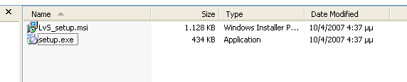
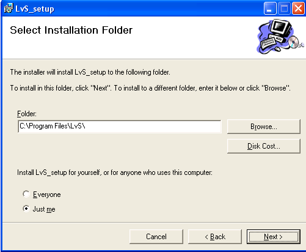

How do I install LvS?

1. Double click on "setup.exe"

2. Click "Next" in the dialogue boxes that appear.
A shortcut will be created in your desktop.
How do I install LvS?
2. Click "Next" in the dialogue boxes that appear.
A shortcut will be created in your desktop.